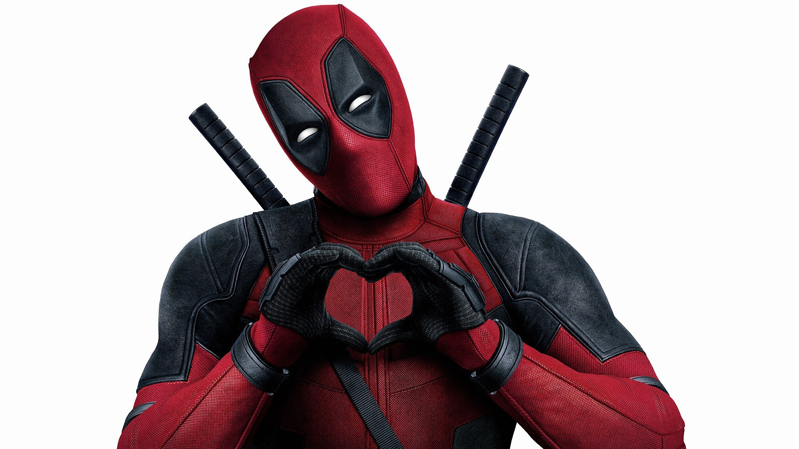

Deadpool, cujo nome verdadeiro é Wade Winston Wilson, é um personagem fictício do universo Marvel, conhecido por seu humor sarcástico e comportamento imprevisível. Ele foi criado no início dos anos 90 e fez sua primeira aparição como vilão em "Novos Mutantes #98". Originalmente, Deadpool foi concebido como uma paródia do personagem Exterminador da DC, mas rapidamente ganhou popularidade e uma história própria. Sua infância foi marcada por traumas, incluindo a morte de sua mãe e o abuso por parte de seu pai, o que moldou sua personalidade complexa e suas motivações como anti-herói.
 Voltar